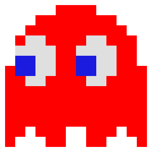
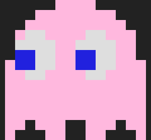
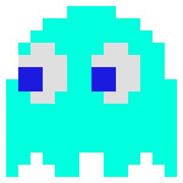

• Apelido: Shadow (Sombra)
• Personalidade: É o mais agressivo e direto.
• Comportamento: Persegue a posição atual exata do Pac-Man de forma implacável. Ele fica ainda mais rápido na metade do nível (fase conhecida como Cruise Elroy) conforme as bolinhas vão acabando.

